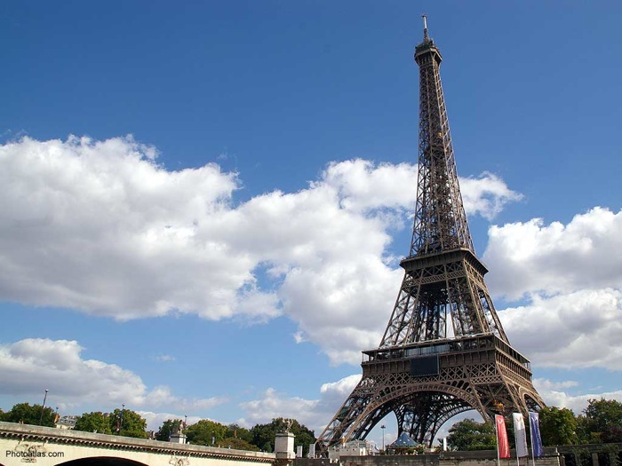
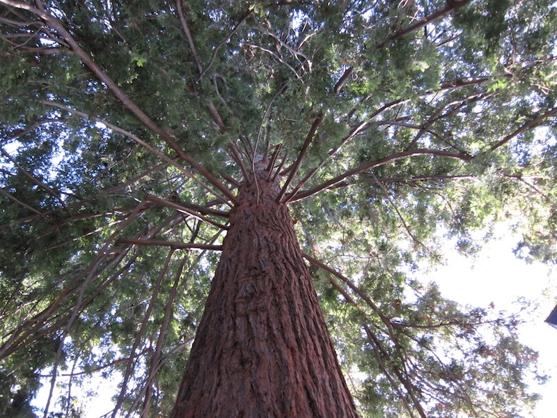
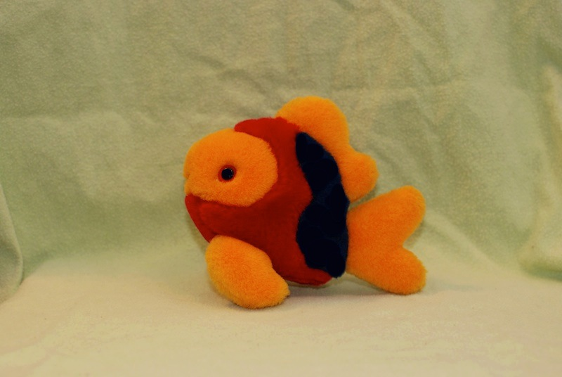
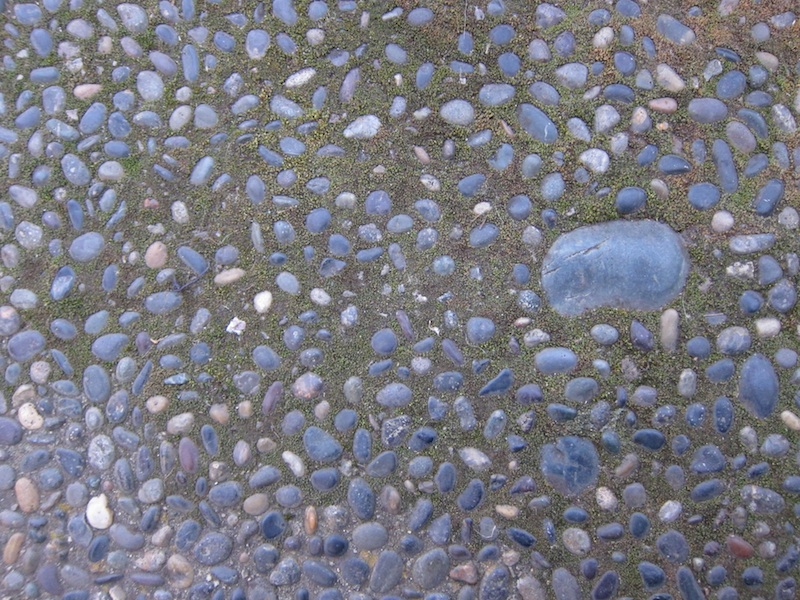
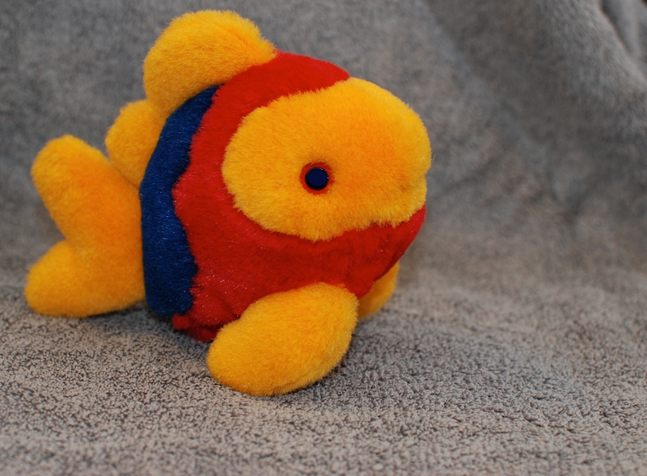

To play around with the bluescreen code, we'll use a few more images, including these:

paris.jpg -- incomparable Eiffel tower in Paris
yosemite.jpg -- Half Dome in Yosemite California, an amazing place to visit

redwood.jpg -- Redwood tree. Redwood trees are typical of the northern California coast where Stanford is located. (This tree is actually in Nick's front yard)
Working with a main image and a back image, there is a problem if the back image is smaller than the main image -- the code will try to access a non-existent pixel, and we get an "x/y out of bounds" error. The following call fixes this problem:
back.setSameSize(image);
The above line resizes the back image if necessary, so it is at least as big as the main image, which is exactly what we need for blue screening, picking pixels from the back image to place into the main image. You'll see this line in the starter code for the problems below.
1. Here is the striped-fish-green.jpg image:

Write bluescreen code to place this fish in front of the yosemite.jpg background. The fish has bits of blue on it, but that's ok since we're using a green background in this case. Adjust the code so that all of the green towel below the fish disappears. Little flecks of white will appear in the blue middle section of the fish; we're stuck with those with our current technique.
|
|
2. For this problem, we'll accomplish a sort of artistic effect, working with the redwood.jpg image:
And the pebbles.jpg image:

Write bluescreen code to modify the redwood.jpg image, replacing the trunk and some of the branches of the tree with pixels from pebbles.jpg. The result is a sort of fanciful looking stone-tree image. Adjust the code so that the pebbles are on the trunk and some of the branches; don't put pebbles all over the bottom of the image.
|
|
3. This problem is titled "Fish Dreams of Paris". This problem will use paris.jpg:
And striped-fish-blue.jpg:

Here the striped fish is facing right in front of a blue background. Parts of the fish itself are blue -- the eye and the vertical stripe in the middle. For this problem, we'll let the background image replace those two blue areas as well.
Write bluescreen code to place striped-fish-blue.jpg in front of paris.jpg. In particular, adjust the code so that the blue background, the blue middle stripe, and blue eye of the fish all show the paris.jpg pixels. Adjust the code so the blue towel background below the fish is almost completely replaced.
|
|